Textos para informar e descrever artigo · verbete · aviso · retrato
Horário
Aberto a todos os curiosos. Entrada livre — traz um lápis.
Prime School · Português Língua Materna
O Gabinete das Coisas VerdadeirasBem-vindo · Unidade 1
Uma carta à entrada
Caro visitante,
Este Gabinete guarda coisas verdadeiras: uma osga que sobe paredes lisas, um dicionário mais velho do que eu, avisos que mandam e retratos que falam. Aqui, cada texto informa ou descreve — e cada um tem a sua maneira de o fazer.
Vais visitar cinco salas. Em cada uma, aprendes a ler, a escrever e a falar como os especialistas que cá trabalham. No fim da visita, vais abrir a tua própria vitrine.
Traz os olhos bem abertos e um lápis afiado.
Guilhermina Vaz, guardiã do Gabinete
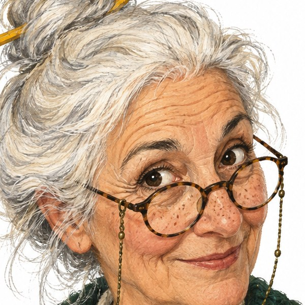
{{PLAN}}
BILHETE N.º 0005
No fim da visita, sou capaz de…
UNIDADE 1
Anteciparprever o assunto de um texto pelo título, pelas imagens e pela organização.
Lercompreender um artigo de enciclopédia, um verbete de dicionário, um aviso e um retrato.
Escreverescrever um verbete curto, um aviso e o retrato de uma pessoa ou de um lugar.
Falar e ouvirfazer uma exposição oral com esquema, abertura e fecho; distinguir factos de opiniões.
Gramáticausar o modo imperativo, os nomes comuns coletivos e os graus do adjetivo.
AS CHAVES DO GABINETE{{KEY:bronze}} aquecer{{KEY:prata}} aplicar{{KEY:ouro}} desafiar-me{{QRICON}} ouvir ou explorar online
O Gabinete das Coisas VerdadeirasÁtrio · Ler antes de ler
Átrio · Antecipar
Átrio · Educação literária
Ler antes de ler
Os bons leitores são detetives: antes de lerem uma única frase, já desconfiam do assunto do texto. As pistas estão no título, nas imagens e na forma como o texto está organizado.
1{{KEY:bronze}}
Textos sem palavras
Antecipar
Chegaram ao Gabinete quatro textos, mas alguém lhes apagou as palavras. Observa só a forma. Escreve por baixo de cada um o tipo de texto.
artigo de enciclopédiaverbete de dicionárioavisoretrato
A
B
C
D
Que pista te ajudou mais em cada caso?
2{{KEY:prata}}
Prevê antes de entrares na Sala 1
Antecipar
A osga-comum
Tarentola mauritanica
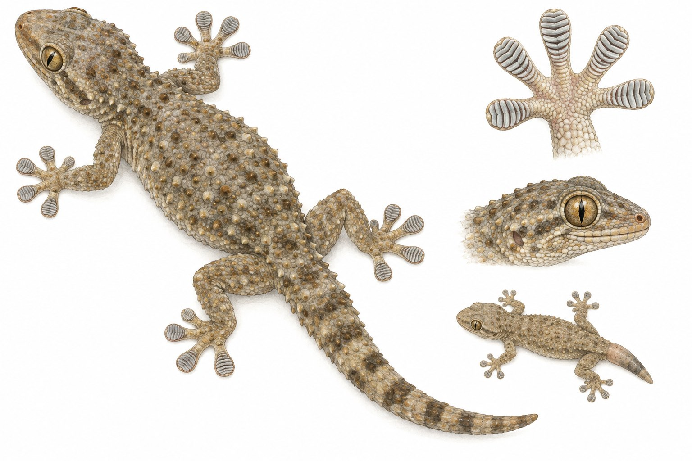
AspetoOnde viveO que comeSuperpoderesMitos e verdades
Olha só para o título, para a imagem e para os subtítulos do texto das páginas seguintes.
De que vai tratar o texto?
Vai contar uma história ou dar informações? Que pista te diz isso?
Escreve duas perguntas a que o texto talvez responda.
Depois de leres, confirma:acerteiacertei em parteenganei-me
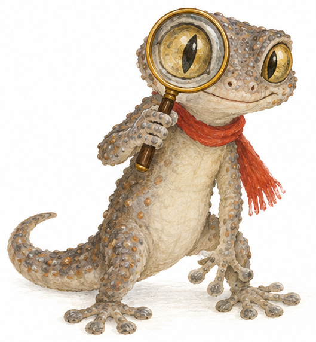
Sou a Mourinha, a osga do Gabinete. Uma dica de detetive: título + imagens + organização = previsão. E, depois de ler, confirma sempre se acertaste!
O Gabinete das Coisas VerdadeirasSala 1 · A Enciclopédia
Sala 1 · Enciclopédia
Sala 1 · Artigo de enciclopédia
Enciclopédia dos Animais de Portugal Vol. III · Répteis · p. 214
A osga-comum
Tarentola mauritanica — também chamada osga-moura
A osga-comum é um pequeno réptil que vive em quase todo o território de Portugal continental. É muitas vezes vista nas paredes das casas, ao fim do dia, à espera de insetos.
1234
Fig. 1 Osga-comum vista de cima: repara nas filas de tubérculos nas costas. Fig. 2 Planta da pata, com as lamelas adesivas debaixo dos dedos. Fig. 3 Cabeça de perfil: o olho grande, de pupila vertical, ajuda-a a ver na penumbra. Fig. 4 Osga com a cauda regenerada, mais curta e mais lisa.
Ficha rápida
Grupo
réptil
Tamanho
cerca de 15 cm (até 19 cm), com a cauda
Atividade
crepuscular e noturna
Alimentação
insetos e aranhas
Perigo
nenhum para o ser humano
O Gabinete das Coisas VerdadeirasSala 1 · A Enciclopédia
Sala 1 · Enciclopédia
Aspeto
A osga-comum mede cerca de 15 centímetros, com a cauda incluída; alguns exemplares chegam aos 19. Tem o corpo largo e achatado, a cabeça bem destacada e olhos grandes, de íris dourada e pupila vertical.
A pele das costas é rugosa, coberta de filas de pequenos tubérculos. A cor varia entre o cinzento, o acastanhado e o esbranquiçado, e pode ficar mais clara ou mais escura, conforme o ambiente. A barriga é clara: bege, amarelada ou branca.
Onde vive
Prefere lugares quentes e secos. Encontra-se em muros de pedra, rochas, troncos, ruínas e paredes de edifícios, tanto no campo como na cidade. É mais comum no sul e no interior do país. Também existe na ilha da Madeira, onde foi introduzida pelo ser humano.
O que come
É um animal crepuscular e noturno: caça ao anoitecer e durante a noite. Alimenta-se sobretudo de insetos, como moscas, mosquitos e traças, e também de aranhas. Por isso, muitas vezes espera junto às lâmpadas, onde os insetos se juntam.
Superpoderes
Patas que colam. Por baixo de cada dedo, a osga tem almofadas com lamelas, cobertas de pelos microscópicos. É graças a elas que consegue subir paredes lisas e até andar no teto.
Cauda de reserva. Quando é atacada, a osga pode soltar a cauda, que continua a mexer-se e distrai o predador. Depois, cresce-lhe uma cauda nova, mais lisa e sem tubérculos.
Mitos e verdades
Há quem acredite que a osga é venenosa ou que faz mal a quem lhe toca. Não é verdade: a osga-comum é inofensiva para as pessoas. Pelo contrário, é útil, porque come muitos dos insetos que nos incomodam.
Fontes: Museu Virtual da Biodiversidade, Universidade de Évora; Ciência Viva — Agência Nacional para a Cultura Científica e Tecnológica.
Palavras do Gabinete
réptil — animal de pele com escamas, que põe ovos e cuja temperatura depende do ambiente.
tubérculo — pequeno alto, arredondado, na pele.
crepuscular — ativo ao crepúsculo, quando o dia está a acabar.
lamela — lâmina muito fina.
predador — animal que caça outros para se alimentar.
inofensivo — que não faz mal.
{{QR:artigo}}
OuvirOuve o artigo lido em voz alta. Acompanha com o dedo e repara nas pausas entre as partes.
{{QR:museu}}
ExplorarVisita a ficha verdadeira da osga no Museu Virtual da Biodiversidade. Que informação nova encontras?
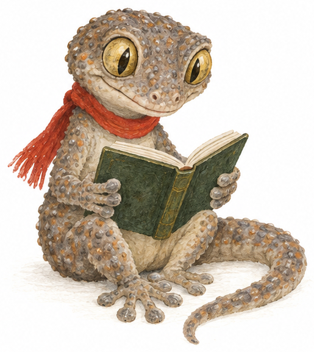
Este artigo é sobre mim! Repara: os subtítulos arrumam a informação por temas. Se só quiseres saber o que eu como, vais direto a «O que come».
O Gabinete das Coisas VerdadeirasSala 1 · Compreender o artigo
Sala 1 · Enciclopédia
Sala 1 · Leitura
Raio-X de um artigo
Um artigo de enciclopédia é como um armário bem arrumado: cada informação tem a sua gaveta.
3{{KEY:bronze}}
Cada parte, a sua função
Ler
123
456
Escreve no quadrado o número da parte do artigo que tem cada função.
Divide o texto por temas e ajuda a encontrar depressa uma informação.
Diz o nome do animal e o seu nome científico.
Mostra onde foi encontrada a informação — prova que se pode confiar no texto.
Apresenta o assunto em poucas linhas: o que é e onde vive.
Resume os dados mais importantes numa caixa.
Mostra o animal e os seus pormenores, com uma legenda que os explica.
Um artigo de enciclopédia informa sobre um assunto de forma objetiva (sem opiniões), usa vocabulário rigoroso, está organizado com subtítulos e apoia-se em imagens, legendas e fontes.
4
Três níveis de leitura
Ler
{{KEY:bronze}} Encontrar
Indica três lugares onde vive a osga.
Que palavra do texto diz que a osga caça ao anoitecer?
A osga sobe paredes lisas graças às .
{{KEY:prata}} Relacionar
Porque é que as osgas esperam junto às lâmpadas?
Para que lhe serve soltar a cauda?
Em que secção procuras a resposta a «A osga é perigosa?»
{{KEY:ouro}} Pensar
O texto diz que a osga é «útil». Concordas? Justifica com uma informação do artigo.
Escreve uma pergunta a que o artigo não responde. Onde podias procurar a resposta?
↺ Volta à página 3 e confirma as tuas previsões.
O Gabinete das Coisas VerdadeirasSala 1 · Facto ou opinião?
Sala 1 · Enciclopédia
Sala 1 · Oralidade e leitura
Facto ou opinião?
À saída da Sala 1 há um Livro de Visitas. As pessoas escrevem lá o que pensam — mas, no meio das opiniões, escondem-se também factos.
Facto
Pode ser verificado: medido, observado ou confirmado numa fonte de confiança. É igual para toda a gente.
A osga tem pupilas verticais.
Opinião
Mostra o que alguém pensa ou sente. Muda de pessoa para pessoa e não se pode provar.
A osga é o animal mais giro do Gabinete.
Palavras que denunciam opiniões:acho quepenso quena minha opiniãoparece-megostodetestolindohorrívelo melhor
5{{KEY:bronze}}
O Livro de Visitas
Ler
Escreve F (facto) ou O (opinião) em cada carimbo.
Livro de Visitas · Sala 1
1A osga é nojenta. Não quero vê-la nunca mais! — Rita, 9 anos
2As osgas comem mosquitos. — Tomás
3Este é o museu mais divertido de Lisboa! — avó Lurdes
4O Gabinete abre às 10 horas. — Sr. Anselmo
5Acho que a D. Guilhermina devia ter um gato. — Inês
6A cauda nova da osga é mais lisa do que a primeira. — Mariana
7O artigo sobre a osga é o mais interessante da enciclopédia. — Duarte
8As osgas são venenosas. — anónimo
{{KEY:ouro}} Frase 8: parece um facto, porque se pode verificar… mas o artigo diz outra coisa. Como lhe chamarias? Discute com a turma.
6{{KEY:prata}}
Ouve e decide
Ouvir
{{QR:fo}}
Ouve oito frases. Depois de cada uma, escreve F ou O.
1
2
3
4
5
6
7
8
7{{KEY:prata}}
Agora és tu
Escrever
Escolhe um objeto da tua sala de aula e escreve sobre ele:
um facto
uma opinião
O Gabinete das Coisas VerdadeirasSala 2 · O Dicionário
Sala 2 · Dicionário
Sala 2 · Verbete de dicionário
A casa de cada palavra
Num dicionário, cada palavra tem uma casa: o verbete. É um texto curtinho, mas cheio de informação — e muito bem arrumado.
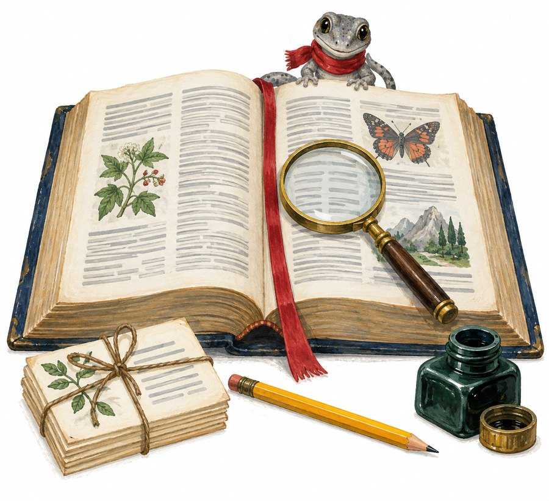
1entrada2divisão silábica3classe e género
gabinete(ga·bi·ne·te)n. m.1. Pequena sala onde se trabalha ou estuda. A diretora recebeu-nos no seu gabinete.2. Sala onde se guardam e mostram coleções de objetos raros ou curiosos. Visitámos um gabinete de curiosidades.3. Grupo de pessoas que trabalham diretamente com um governante. O ministro reuniu o seu gabinete.◆ Do francês cabinet. ◆ Pl. gabinetes.
4aceções numeradas5exemplos6origem e plural
1A entrada é a palavra, a negrito, na sua forma base.
2A divisão silábica; a sílaba sublinhada é a tónica.
3A classe e o género, em abreviatura.
4As aceções: os vários significados, numerados.
5Os exemplos, em itálico, mostram a palavra em uso.
6A origem e outras informações, como o plural.
8{{KEY:bronze}}
Qual é a aceção?
Ler
Escreve o número da aceção de gabinete usada em cada frase.
No Gabinete das Coisas Verdadeiras há uma osga que dorme num candeeiro.
O gabinete da primeira-ministra preparou a visita à escola.
O meu pai tem um gabinete em casa, cheio de livros e papéis.
O Gabinete das Coisas VerdadeirasSala 2 · Usar o dicionário
Sala 2 · Dicionário
Sala 2 · Treino de pesquisa
Caçar palavras depressa
Quem sabe usar um dicionário encontra qualquer palavra em menos de um minuto. O segredo é conhecer três truques.
9{{KEY:bronze}}
Truque 1 · A ordem alfabética
Pesquisar
As fichas do Gabinete caíram ao chão. Arruma-as por ordem alfabética. Quando a primeira letra é igual, olha para a segunda; se também for igual, olha para a terceira.
osgalupafóssilconchalagartomapalápislivro
10{{KEY:prata}}
Truque 2 · As palavras-guia
Pesquisar
lupamapa
No topo de cada página do dicionário há duas palavras-guia: a primeira e a última dessa página. Todas as outras ficam, por ordem alfabética, entre elas.
Rodeia as palavras que vais encontrar nesta página.
luvalumemadeiraluamantamarfimluz
11{{KEY:prata}}
Truque 3 · A forma base
Pesquisar
No dicionário, os nomes e os adjetivos aparecem no masculino singular e os verbos no infinitivo. Que palavra procuras para encontrar…
osgasprocuro
corriamprocuro
lindíssimasprocuro
soltouprocuro
12{{KEY:ouro}}
Uma palavra, vários sentidos
Pesquisar
{{QR:priberam}}
Dicionário onlineNo artigo da osga aparece a palavra lamelas. Procura lamela no dicionário online. Quantas aceções encontraste? Copia a que combina com o texto da página 5.
O Gabinete das Coisas VerdadeirasSala 2 · Oficina de escrita
Sala 2 · Dicionário
Sala 2 · Escrita
Escrever um verbete
1Escolhe a palavra e escreve-a na forma base.
2Divide-a em sílabas.
3Indica a classe e o género.
4Escreve a definição: clara e curta.
5Junta um exemplo em itálico.
A fórmula de uma boa definição
o grupo a que pertence + o que o torna diferente
lupa — instrumentocom uma lente que faz as coisas parecerem maiores.
Nunca uses a própria palavra na definição: «lupa é uma coisa para ver com a lupa» não ajuda ninguém!
13{{KEY:prata}}
O verbete da vitrine
Escrever
Escreve o verbete da palavra vitrine. Pensa: que tipo de objeto é? Para que serve? Onde se encontra?
entradasílabasclasse e génerodefiniçãoexemplo
14{{KEY:ouro}}
O Dicionário das Coisas Que Ainda Não Têm Nome
Escrever
caudelembro(cau·de·lem·bro)n. m. Saudade que uma osga sente da cauda que perdeu. Sempre que vê uma fotografia antiga, a Mourinha tem um caudelembro.
esquecedouro(es·que·ce·dou·ro)n. m. Gaveta onde vão parar as coisas de que ninguém se lembra. As chaves estavam no esquecedouro da cozinha.
Há coisas que ainda não têm nome. Inventa uma palavra para uma delas e escreve o seu verbete, com todas as partes.
Revê o teu verbete:palavra a negritosílabasclasse e génerodefinição claraexemplo
O Gabinete das Coisas VerdadeirasLaboratório da Língua · Nome comum coletivo
Sala 2 · Gramática
Laboratório da Língua · 1
A Sala das Coleções
O Gabinete está cheio de coleções: conchas, minerais, livros… Para falarmos de muitos seres ou coisas da mesma espécie com uma só palavra, usamos um nome coletivo.
RegraO nome comum coletivo está no singular, mas designa um conjunto. um cardume = muitos peixes
um de ovelhas · uma de pessoas · um de pinheiros · uma de navios · uma de músicos · uma de porcos
Palavras de apoio: vara · rebanho · pinhal · frota · orquestra · multidão
17{{KEY:ouro}}
O verbo não se engana
Gramática
O coletivo está no singular — o verbo também. Rodeia a forma certa.
O cardume nadounadaram para o fundo.
A multidão aplaudiuaplaudiram a guia.
Intruso: sublinha o nome que não é coletivo: rebanho · enxame · abelha · frota
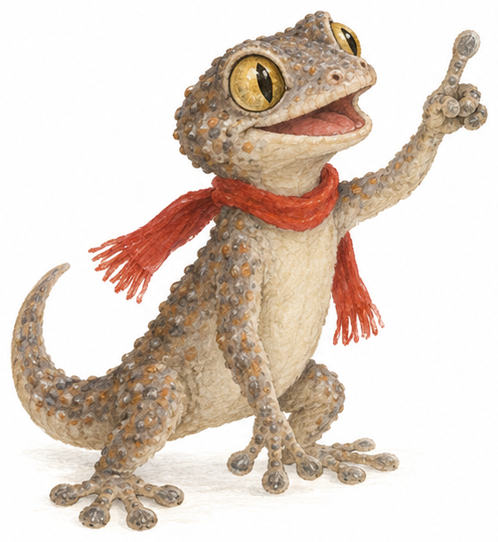
Sozinha, sou uma osga. Mas, quando as minhas primas todas vêm cá a casa, somos… ainda não temos coletivo! Inventa um para nós e escreve o verbete na p. 10.
O Gabinete das Coisas VerdadeirasSala 3 · Os Retratos
Sala 3 · Retratos
Sala 3 · Retrato de uma pessoa
A D. Guilhermina
Retrato escrito pelo Tiago, 10 anos, depois de uma visita ao Gabinete
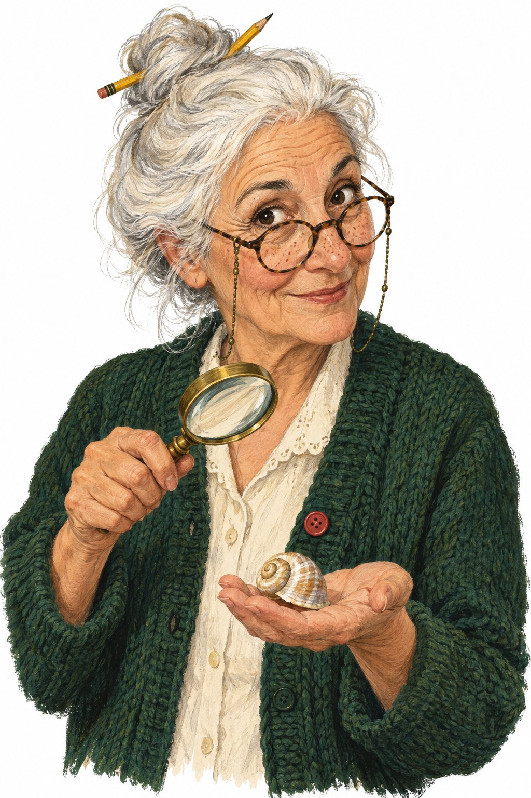
Por fora: do geral (altura, idade) para os pormenores.
Por dentro: cada qualidade vem com uma prova.
Fecho: uma ideia que fica na memória.
A D. Guilhermina é a guardiã do Gabinete das Coisas Verdadeiras. É uma senhora pequena e magra, com setenta anos bem vividos.
Tem o cabelo branco e fofo, apanhado num carrapito onde espeta sempre um lápis amarelo — diz que é para nunca o perder. Os olhos são escuros e vivos, rodeados de ruguinhas de quem se ri muito. Uns óculos redondos, presos a um fio, balançam-lhe no peito e só sobem ao nariz quando é preciso ler letras miudinhas. Usa quase sempre um casaco de malha verde-garrafa, com um botão vermelho que não condiz com os outros.
Mas o mais bonito da D. Guilhermina não se vê logo. É muito paciente: responde à mesma pergunta dez vezes sem se zangar. É curiosíssima: examina uma concha com a lupa como se fosse a primeira que via. E é um bocadinho teimosa, porque se recusa a pôr a osga Mourinha fora do Gabinete.
Quando fala dos seus objetos, a voz dela fica mais alta e mais rápida do que o costume. Nesse momento, percebe-se que a D. Guilhermina não guarda apenas coisas: guarda histórias.
retrato físicoretrato psicológico
{{QR:retratos}}
OuvirOuve os dois retratos desta sala. Fecha os olhos: consegues «ver» a D. Guilhermina e o sótão?
O Gabinete das Coisas VerdadeirasSala 3 · Os Retratos
Sala 3 · Retratos
Sala 3 · Retrato de um lugar
O sótão do Gabinete
Retrato escrito pela D. Guilhermina
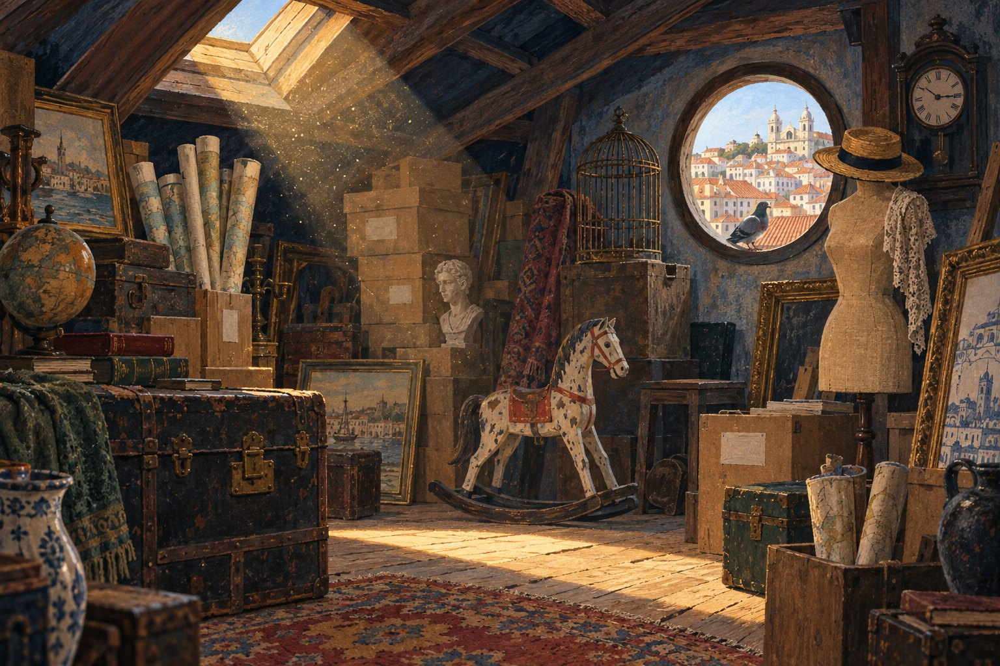
Subo a escada estreita, que range a cada degrau, e abro a porta do sótão.
Lá dentro, o ar é morno e cheira a pó, a papel velho e a madeira. Do teto inclinado, feito de traves escuras, desce um raio de sol que entra pela claraboia. Dentro dele, dançam milhares de grãos de pó dourados.
À esquerda, amontoam-se baús de couro, com fechos de latão já gastos. Ao centro, um cavalo de baloiço branco, com a tinta a descascar, parece esperar por uma criança que nunca mais voltou. Atrás dele, uma gaiola vazia descansa em cima de uma pilha de baús. À direita, um manequim de costura usa um chapéu de palha.
Ao fundo, a janela redonda é o sítio mais luminoso de todos. Por ela veem-se os telhados cor de laranja de Lisboa e, no parapeito, um pombo que me observa, desconfiado.
Aqui, o silêncio é enorme: ouve-se o tique-taque do relógio da parede. O sótão é o lugar mais misterioso do Gabinete — e o meu preferido.
Chegada: quem descreve entra no lugar — e nós com ela.
O olhar percorre o espaço: esquerda, centro, direita, fundo.
Não é só o que se vê: há cheiros e sons.
Comparações e personificação: o cavalo «parece esperar».
Fecho: um sentimento.
O Gabinete das Coisas VerdadeirasSala 3 · Compreender os retratos
Sala 3 · Retratos
Sala 3 · Leitura
Como se pinta com palavras
18{{KEY:bronze}}
Por fora e por dentro
Ler
Completa a tabela com o retrato da D. Guilhermina (p. 12). No retrato psicológico, a prova é o que ela faz.
Retrato físico
Retrato psicológico
A prova no texto
cabelo branco e fofo
muito paciente
responde à mesma pergunta dez vezes sem se zangar
{{KEY:prata}} Porque é que o Tiago deixou o retrato psicológico para o fim? Relê a frase «Mas o mais bonito da D. Guilhermina não se vê logo.»
19{{KEY:bronze}}
O mapa do olhar
Ler
Escreve, em cada zona do sótão, o que lá está, segundo o texto da p. 13.
ao fundo
à esquerda
ao centro
à direita
O que se sente no sótão? Encontra uma prova para cada sentido.
vê-se
ouve-se
cheira a
sente-se
20{{KEY:ouro}}
O que o texto esqueceu
Escrever
Na ilustração da p. 13 há objetos de que o texto não fala — um globo, um busto branco, uma jarra azul e branca… Escolhe um e escreve uma frase para o acrescentar ao retrato. Usa uma expressão de lugar.
O Gabinete das Coisas VerdadeirasLaboratório da Língua · Graus do adjetivo
Sala 3 · Gramática
Laboratório da Língua · 2
A Sala das Medidas
Os adjetivos dizem como as coisas são — e também quanto o são. Para comparar e para exagerar, usamos os graus do adjetivo.
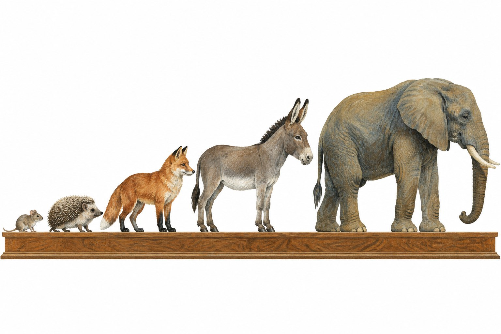
NormalO burro é grande.
Comp. de superioridadeO elefante é mais pesado do que o burro.
Comp. de igualdadeA raposa é tão curiosa como a osga.
Comp. de inferioridadeO ouriço é menos rápido do que a raposa.
Superlativo relativoO elefante é o maior dos cinco. O rato é o menos pesado.
Superlativo absolutoO rato é muito pequeno. É pequeníssimo!
21{{KEY:bronze}}
Detetive de graus
Gramática
Estas frases vêm dos retratos. Indica o grau de cada adjetivo sublinhado.
É curiosíssima.
A voz fica mais alta do que o costume.
É o lugar mais misterioso do Gabinete.
É muito paciente.
22{{KEY:prata}}
Compara os cinco
Gramática
Olha para a imagem e escreve três frases, cada uma com um grau diferente. Usa: pesado, rápido, alto, espinhoso.
⚠ O -íssimo já é o máximo: nunca digas «muito lindíssimo».
O Gabinete das Coisas VerdadeirasSala 3 · Oficina de escrita
Sala 3 · Retratos
Sala 3 · Escrita
Pinta o teu retrato
Escolhe: o retrato de uma pessoa que conheces bem ou de um lugar onde gostas de estar. Primeiro planeia; depois escreve.
24{{KEY:prata}}
O plano
Escrever
Retrato de uma pessoa
Apresentação: quem é? como a conheces?
Por fora: do geral para o pormenor — altura, cabelo, olhos, roupa e um pormenor especial.
Por dentro: duas ou três qualidades, cada uma com uma prova.
Fecho: o que sentes por ela.
Retrato de um lugar
Chegada: onde é? como se entra?
Visão geral: como é o espaço?
Percurso do olhar: à esquerda, ao centro, à direita, ao fundo.
Sentidos: cheiros, sons, temperatura.
Fecho: o que sentes ali.
Caixa de adjetivos
pessoas por fora: esguio, franzino, corpulento, sardento, grisalho, encaracolado · pessoas por dentro: bem-disposto, generoso, tímido, trapalhão, sonhador, teimoso · lugares: acolhedor, sombrio, amplo, apertado, ruidoso, perfumado, húmido
25{{KEY:ouro}}
O meu retrato
Escrever
Usa pelo menos um adjetivo no grau comparativo e um no superlativo. Usa uma comparação com como ou parece.
Revê:segui o meu planoparágrafos diferentes para ideias diferentesprovas para as qualidadesgraus do adjetivofecho
O Gabinete das Coisas VerdadeirasSala 4 · Os Avisos
Sala 4 · Avisos
Sala 4 · Aviso
Textos que se leem de passagem
Um aviso é um texto curto que informa ou alerta um grupo de pessoas. Tem de ser percebido à primeira — muitas vezes, por quem vai a passar.
A
POR FAVOR, NÃO TOQUEM NAS PEÇAS.
Obrigado.
B
AVISO
Encerramento da Sala dos Fósseis
Informamos os visitantes de que a Sala dos Fósseis estará encerrada no sábado, dia 17 de outubro, para a limpeza das vitrines.
Pedimos desculpa pelo incómodo. Aproveitem para visitar a Sala dos Minerais, que terá uma visita guiada às 11 horas.
Lisboa, 9 de outubro de 2026 A Direção do Gabinete
C
ATENÇÃO! Osga a dormir no candeeiro da Sala 2. Falem baixinho e não acendam a luz. — G.
D
AVISO AOS ALUNOS DO YEAR 5
Na quinta-feira, dia 22 de outubro, vamos visitar o Gabinete das Coisas Verdadeiras.
Saída: às 9h00, do portão da escola.
Regresso: às 12h30.
Tragam: lanche, caderno e lápis.
Sejam pontuais! A professora Ana
26{{KEY:bronze}}
As perguntas de um aviso
Ler
Aviso B
Aviso D
Quem avisa?
A quem?
O quê?
Quando?
27{{KEY:prata}}
Urgente!
Ler
Qual dos quatro avisos é o mais urgente? Que recursos gráficos o mostram (cor, maiúsculas, pontuação, símbolos)?
O Gabinete das Coisas VerdadeirasLaboratório da Língua · Modo imperativo
Sala 4 · Gramática
Laboratório da Língua · 3
Os verbos que mandam
Os avisos dão ordens, pedem e aconselham: não toquem, falem baixinho, sejam pontuais. Para isso, usam o modo imperativo.
RegraO imperativo serve para ordenar, pedir ou aconselhar. Pode ser afirmativo (Fala!) ou negativo (Não fales!).
a quem falo
falar
ler
abrir
tu · afirmativo
fala
lê
abre
tu · negativo
não fales
não leias
não abras
você · afirm. e neg.
(não) fale
(não) leia
(não) abra
vocês · afirm. e neg.
(não) falem
(não) leiam
(não) abram
afirmativoToca!
negativo — certoNão toques!
negativo — erradoNão toca!
⚠ A armadilha mais comum: com tu, o negativo muda de forma. «Não toca» está errado.
Os rebeldes: afirmativo / negativo (tu)
sersê não sejas
irvai não vás
fazerfaz não faças
dizerdiz não digas
pôrpõe não ponhas
tertem não tenhas
virvem não venhas
28{{KEY:bronze}}
Caça ao imperativo
Gramática
Sublinha os verbos no imperativo nos avisos da p. 17. Encontras seis:
29{{KEY:ouro}}
Regras da Sala dos Insetos
Gramática
(guardar) as mochilas no cacifo. (não correr) nos corredores. (pôr) os telemóveis em silêncio.
Escreve para vocês.
30{{KEY:prata}}
O aviso da Mourinha tem erros!
Gramática
AVISO DA MOURINHA Não acende a luz! Não faz barulho. Deixa-me dormir e não me acorda antes das nove!
Reescreve o aviso sem erros:
O Gabinete das Coisas VerdadeirasSala 4 · Oficina de escrita
Sala 4 · Avisos
Sala 4 · Escrita
Escreve um aviso
31{{KEY:prata}}
Escolhe a tua situação
Escrever
A Mourinha desapareceu!Escreve um aviso para a encontrar. Descreve-a bem — é um retrato em ponto pequeno.
A Feira das ColeçõesA tua turma vai mostrar coleções na escola. Avisa os colegas: o quê, quando, onde, o que trazer.
A Sala dos InsetosO Gabinete vai abrir uma sala nova. Escreve o aviso com três regras para os visitantes.
32
Planeia com as perguntas do aviso
Quem?avisa e a quem
O quê?o assunto
Quando?dia e hora
Onde?o local
E então?o que devem fazer (imperativo!)
O MEU AVISO
Um bom aviso tem…
título curto e bem visível frases curtas e claras verbos no imperativo destaques: maiúsculas, cor ou símbolo data e assinatura
O teste dos 10 segundos
Mostra o teu aviso a um colega durante 10 segundos e esconde-o. Se ele conseguir dizer o quê, quando e onde, o teu aviso funciona!
O Gabinete das Coisas VerdadeirasSala 5 · A Visita Guiada
Sala 5 · Oralidade
Sala 5 · Exposição oral
A visita guiada da Leonor
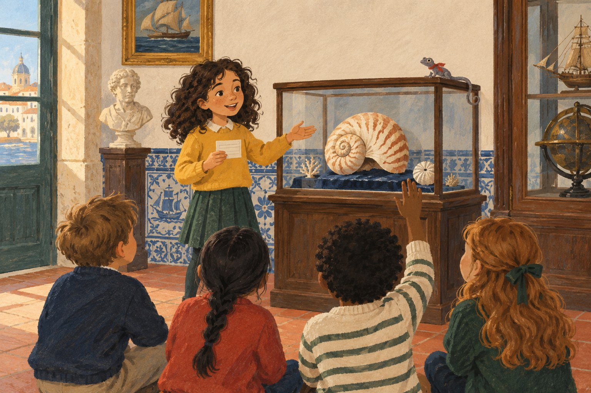
Uma exposição oral é como uma visita guiada: sabes para onde vais, levas os ouvintes contigo e despedes-te no fim. Lê — e ouve — a apresentação da Leonor.
Abertura
Olá a todos! Sabiam que dentro desta vitrine está um animal que é parente dos polvos e que traz a casa às costas? Hoje vou apresentar-vos a concha do náutilo.↑ uma pergunta para captar a atenção · anuncia o tema
Desenvolvimento
Primeiro, vou falar-vos do seu aspeto. A concha é enrolada em espiral e tem riscas cor de laranja sobre um fundo branco. Por dentro, está dividida em muitas câmaras, como uma casa com vários quartos. Em segundo lugar, o náutilo vive nos oceanos Índico e Pacífico, entre os 100 e os 500 metros de profundidade. Por fim, uma curiosidade: sobe e desce na água enchendo as câmaras com gás ou com líquido, como um submarino.↑ três partes, por ordem, com conectores · só factos
Fecho
Em resumo, o náutilo tem uma concha em espiral, vive no fundo do mar e funciona como um submarino. Na minha opinião, é o objeto mais extraordinário do Gabinete. Obrigada pela vossa atenção! Alguém tem alguma pergunta?↑ resumo · opinião assinalada · agradecimento
A ficha da Leonor
NÁUTILO 1. aspeto: espiral, riscas, câmaras 2. onde vive: Índico e Pacífico, 100–500 m 3. curiosidade: submarino! fecho: resumo + opinião + obrigada
Repara: a ficha tem palavras-chave, não frases inteiras. A Leonor não lê — lembra-se.
{{QR:leonor}}
OuvirOuve a Leonor. Quanto tempo demora?
O Gabinete das Coisas VerdadeirasSala 5 · Preparar a exposição
Sala 5 · Oralidade
Sala 5 · Oralidade
Agora, o guia és tu
33
Cinco passos para dois minutos
Falar
1PesquisarProcura informação numa enciclopédia e anota as fontes. Guarda só factos.
2Fazer o esquemaTrês partes, só com palavras-chave.
3Preparar a aberturaEscolhe um truque para captar a atenção.
4Preparar o fechoResumo + opinião + agradecimento + perguntas.
5EnsaiarDuas vezes, em voz alta, com cronómetro.
34{{KEY:bronze}}
Truques de abertura
Uma pergunta «Sabiam que…?»
Uma curiosidade «Este animal pode perder a cauda… e fazer outra!»
Uma adivinha «Sou pequena, subo paredes e como mosquitos…»
Um objeto mistério Mostra-o escondido e revela-o devagar.
Voz e corpo
Olha para o público · fala devagar e bem alto · aponta para o objeto · consulta a ficha, mas não a leias.
35{{KEY:prata}}
A minha ficha
Planear
Tema
Abertura
1.
2.
3.
Fecho
Fonte
36{{KEY:prata}}
Enquanto ouves: o ouvinte atento
Ouvir
O orador…
sim
quase
ainda não
apresentou o tema na abertura
○
○
○
seguiu uma ordem, com conectores
○
○
○
usou factos verdadeiros
○
○
○
assinalou a opinião («na minha opinião»)
○
○
○
fez um fecho com resumo
○
○
○
falou alto, claro e olhou para nós
○
○
○
Duas estrelas e um desejo
★ ★ ✦
O Gabinete das Coisas VerdadeirasOficina · A Minha Vitrine
Oficina · Projeto
Oficina · Projeto final
A minha vitrine
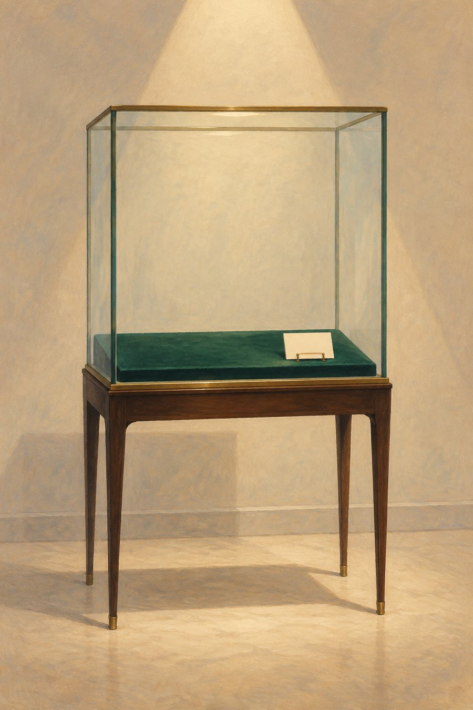
A turma vai transformar-se num Gabinete. Cada aluno traz — ou desenha — um objeto verdadeiro com uma história: uma concha da praia, a chave da casa dos avós, uma pedra estranha, um brinquedo antigo…
Para abrir a tua vitrine, preparas quatro peças. Cada uma usa uma sala desta visita.
SALA 2 · P. 10A etiqueta-verbeteO nome do objeto, como num dicionário.
SALA 1 · PP. 4–7A ficha rápidaTrês factos verdadeiros, com a fonte.
SALA 3 · P. 16O retratoDe quem guardou o objeto ou do lugar de onde veio.
SALA 4 · P. 19O aviso da vitrineDuas regras para os visitantes, no imperativo.
SALA 5 · P. 21E, no dia da inauguração, a visita guiadaDois minutos para apresentares o teu objeto aos visitantes.
37
O calendário da inauguração
Sessão 1Escolher o objeto e pesquisar.
Sessão 2Escrever o verbete e a ficha rápida.
Sessão 3Escrever o retrato e o aviso.
Sessão 4Montar a vitrine e ensaiar a visita.
Inauguração!Receber os visitantes, que escrevem no Livro de Visitas: um facto e uma opinião.
38{{KEY:bronze}}
Primeiras decisões
Planear
O meu objeto
Porque o escolhi
O que quero descobrir
Onde vou pesquisar
O Gabinete das Coisas VerdadeirasOficina · O kit da vitrine
Oficina · Projeto
Oficina · Recorta e completa
O kit da vitrine
Completa cada cartão a lápis, revê-o com um colega e passa-o a limpo. Depois, recorta-o e coloca-o na tua vitrine.
1 · Etiqueta-verbete
entrada
sílabas · classe · género
2 · Ficha rápida
material
origem
idade
curiosidade
fonte
3 · O retrato
desenho ou fotografia
4 · Aviso da vitrine
AVISO
5 · Livro de Visitas
um facto que aprendi
a minha opinião
assinatura
O Gabinete das Coisas VerdadeirasSaída · O que levo daqui
Saída · Balanço
Saída · Balanço
O que levo do Gabinete
39
Carimba o teu bilhete
Autoavaliação
Sou capaz de…
ainda não
quase
sim!
prever o assunto de um texto pelo título, pelas imagens e pela organização
encontrar informação num artigo de enciclopédia
distinguir um facto de uma opinião, a ler e a ouvir
usar um dicionário e escrever um verbete
escrever o retrato de uma pessoa ou de um lugar
escrever um aviso claro, com o imperativo
fazer uma exposição oral com esquema, abertura e fecho
usar nomes coletivos e os graus do adjetivo
40{{KEY:prata}}
Oito perguntas à saída
Revisão
1Que tipo de texto tem uma entrada a negrito e aceções numeradas?
5Facto ou opinião? «O sótão é o lugar mais bonito do mundo.»
2Muitas abelhas formam um .
6Que informação nunca pode faltar num aviso?
3Imperativo negativo de correr (tu):
7Para que serve a abertura de uma exposição oral?
4Grau de antiquíssimo:
8Que três pistas te ajudam a prever o assunto de um texto?
Glossário da visita
aceção — cada um dos significados de uma palavra no dicionário.
artigo de enciclopédia — texto que informa sobre um assunto, organizado por subtítulos.
aviso — texto curto que informa ou alerta um grupo de pessoas.
exposição oral — apresentação de um tema a um público, com abertura, desenvolvimento e fecho.
facto — informação que se pode verificar.
graus do adjetivo — normal, comparativo e superlativo.
modo imperativo — forma do verbo para ordenar, pedir ou aconselhar.
nome coletivo — nome no singular que designa um conjunto.
opinião — o que alguém pensa ou sente.
retrato — descrição de uma pessoa (física e psicológica) ou de um lugar.
verbete — texto que explica uma palavra no dicionário.
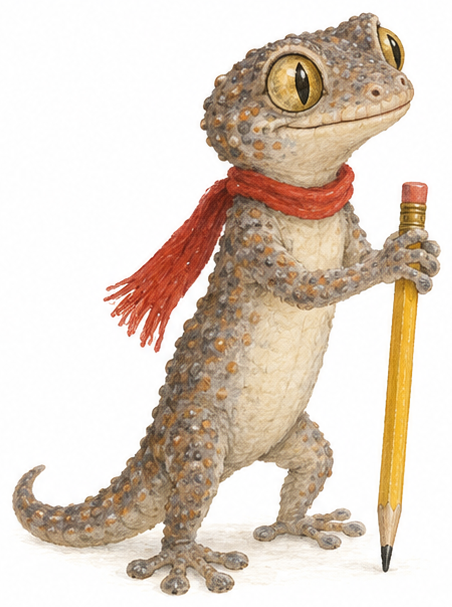
Volta sempre! E, se vires uma osga na parede, diz-lhe olá — agora já sabes que não faz mal a ninguém.
{{QR:solucoes}}
Para o professorSoluções e guiões dos áudios desta unidade.